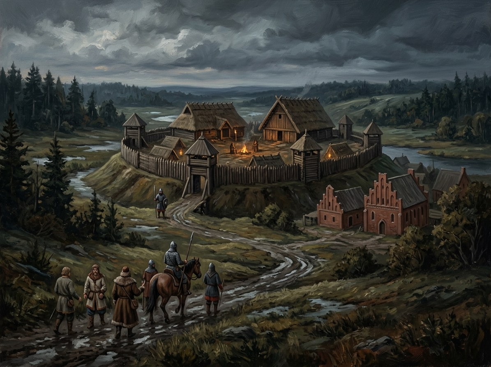

Ašmena¶
Relations
Events here: Battle of Ašmena: Žygimantas defeats Švitrigaila · Žygimantas’s coup at Ašmena
Ašmena

Ašmena · place¶
Type |
place |
Note |
Town on the Ašmena river; site of Žygimantas’s night coup against Švitrigaila in 1432. |
In the 1380s [Historical record]¶
Ašmena (Bel. Ašmiany, Pol. Oszmiana) lies on the Ašmena river (now the Ashmyanka), on the Vilnius-Krėva road about 25 km from Krėva. First mentioned in the 1350s as a town of the Vilnius duchy; the Lithuanian chronicles give it to Jaunutis after Gediminas died in 1341. The Order destroyed the town in 1384 and was repelled in 1402. By 1384 a ducal manor stood here, and a Franciscan church was founded after 1387. In the saga’s period the places that mattered were the manor and the ford. Key events: Žygimantas Kęstutaitis’s coup against Švitrigaila in the night of 31 August to 1 September 1432, and the battle of 8 December 1432 (one battle only, not two) in which Žygimantas defeated Švitrigaila’s army, which had come from Polotsk with Tatar help and taken Minsk, Krėva and Ašmena. Hanseatic routes crossed here in the 15th century. Sources: VLE (Ašmenos mūšis), en.wikipedia (Ashmyany, Battle of Ashmyany).
Sensory sketch¶
A small town in a rolling, wooded plain: timber houses, a manor yard, a ford, rye fields, flax. The sounds are hooves on a plank bridge, geese, carts, the clack of a mill. Autumn turns the roads to clay and the first snow falls in December; the 8 December battle was fought on cold, hard ground. A night coup is noise and torchlight in a quiet place: a ducal manor in the dark, dogs barking, and doors opened by men who know the house.
In the saga¶
The place where the 1382 road and the 1432 road cross: the same inn and ford, fifty years apart. The coup of 1432 is Henė’s whispering in a kinsman’s ear; Švitrigaila’s pregnant wife is seized and he flees to Polotsk. The ground has no mythic residue of its own: its weight is that it lies at the edge of the eastern Dykra, so the Root-Mother’s forest returns after the battle (Book V ch. 11). The word ašmenys (blade) in Book I’s prologue and ch. 2 is not this town.
Getting there¶
Ašmena is between Vilnius and Krėva on the same road: Medininkai is the stop 30 km from Vilnius, then Ašmena, some 25 km short of Krėva. From Vilnius it is about 65-75 km by road, a long day or one and a half days on horse. From Krėva, a half-day ride. Polotsk (where Švitrigaila fled) is some 300 km north-east. Minsk about 120 km south-east. A courier on relay can run Vilnius to Ašmena in a day.
Scenes set here¶
Book V ch. 9 Ašmenos naktis (31 Aug-1 Sep 1432); ch. 11 (the roads to Ašmena, autumn-winter 1432, the December battle); mentions in ch. 16, 18, 19; Book IV ch. 2 (two small castles near Ašmena in the Horodło exchange) and ch. 9 (Ona’s silver sent through Ašmena).
Timeline¶
Year |
Event |
Book |
|---|---|---|
1432-08-31 |
V · Vilko Palikimas |
|
1432-12-08 |
V · Vilko Palikimas |
Connections¶
graph LR
ashmyany["Ašmena"]
ev_asmena_battle["Battle of Ašmena: Žygimantas defeats Švitrigaila"]
ev_coup_1432["Žygimantas's coup at Ašmena"]
ev_coup_1432 -->|Location| ashmyany
ev_asmena_battle -->|Location| ashmyany
style ashmyany stroke-width:3px